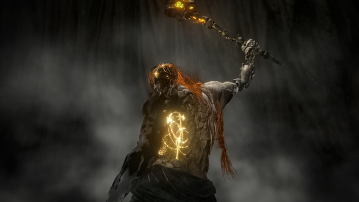

A dificuldade de Elden Ring
Elden Ring é conhecido por sua dificuldade elevada e chefes memoráveis. Cada boss apresenta mecânicas únicas que exigem estratégia, paciência e habilidade do jogador.
Nesta página, apresento o top 10 dos bosses mais difíceis do jogo, baseados na minha experiência com o jogo e no nível de desafio que oferecem.
Ranking dos Bosses Mais Difíceis
-
Top 1 - Malenia, Blade of Miquella

Malenia é considerada por muitos o boss mais difícil do jogo.
-
Top 2 - Radagon of the Golden Order / Elden Beast

Radagon e Elden Beast formam a batalha final de Elden Ring.
-
Top 3 - Maliketh, the Black Blade

Maliketh é extremamente rápido e agressivo.
Por que são difíceis?
- Alta velocidade de ataque
- Dano extremamente elevado
- Mecânicas únicas
Links
Site oficial do Elden RingVoltar ao topo
Abrir topo em outra aba